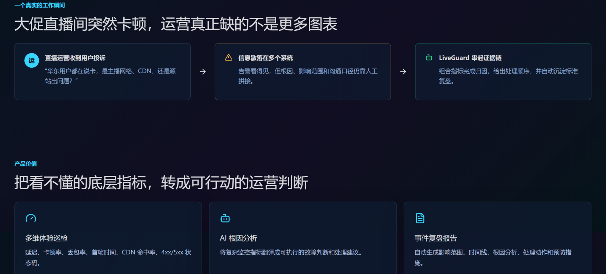
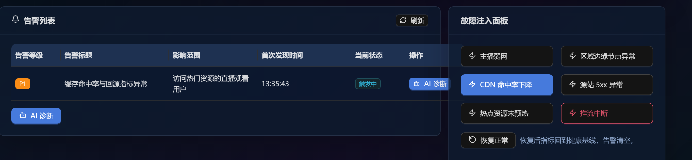
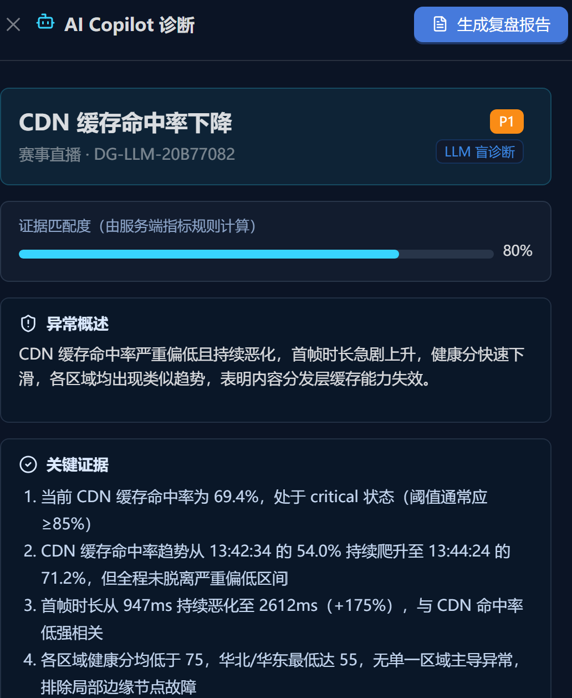
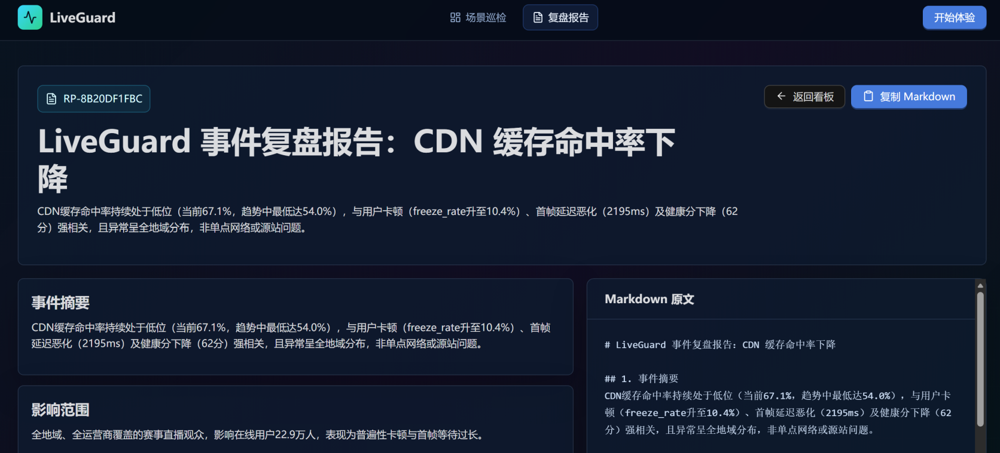

项目概览
直播发生卡顿、延迟或黑屏时，告警通常只能说明“出现异常”，却无法直接回答问题来自主播网络、CDN 缓存、区域边缘节点还是源站服务。LiveGuard 在基础监控之上增加体验解释与故障响应能力，帮助直播运营、客户成功和技术支持完成异常发现、根因定位、处置沟通与事件复盘。
项目 02 / 智能运维
面向实时音视频业务的 AI 体验巡检助手，将 CDN、直播云、RTC 和边缘节点等底层指标，转化为可理解、可验证和可执行的根因判断、处理建议与复盘报告。
直播发生卡顿、延迟或黑屏时，告警通常只能说明“出现异常”，却无法直接回答问题来自主播网络、CDN 缓存、区域边缘节点还是源站服务。LiveGuard 在基础监控之上增加体验解释与故障响应能力，帮助直播运营、客户成功和技术支持完成异常发现、根因定位、处置沟通与事件复盘。
当前业务监控指标和故障场景均由 Mock 数据生成；AI 诊断可以真实调用百炼 LLM。系统会在调用模型前移除注入故障类型和预设答案，要求 LLM 仅根据数值快照、趋势与地域分布独立归因。
当前覆盖电商直播、在线课堂、企业会议、视频客服和赛事直播五类业务场景，并可稳定复现主播弱网、区域链路异常、CDN 命中率下降、源站 5xx、热点资源未预热和推流中断六类典型异常。
从业务问题、异常注入、AI 归因到复盘报告的完整演示链路。
展示直播运营从收到投诉、人工拼接信息，到由 LiveGuard 串起证据链的工作方式。

通过 Mock 场景稳定注入典型故障，生成告警并进入 AI 诊断流程。

模型仅依据清洗后的指标完成归因，服务端再计算证据匹配度。

将诊断证据、影响范围、处理动作和预防措施沉淀为可复制的复盘报告。
